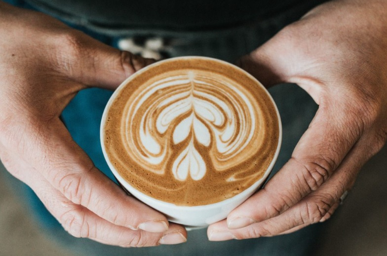
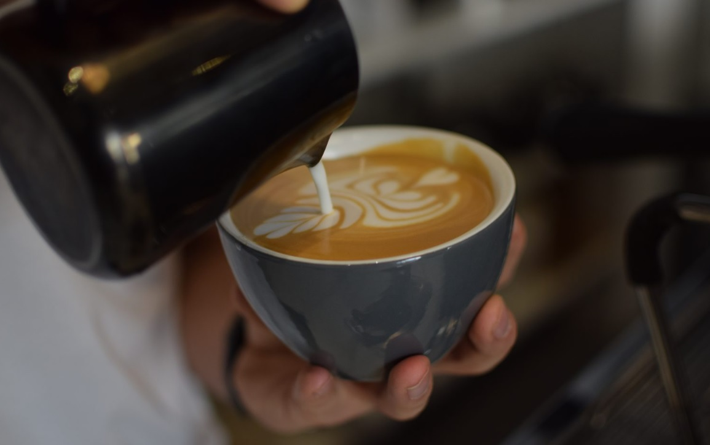

FLAT
WHITE
¿Qué es un Flat White?
Se entiende como Flat White a un café elaborado con dos shots de espresso, terminado con leche, lo que se caracteriza es la leche espumada que se usará en este café, similar a la leche que utilizamos para preparar los lattes. Flat white hace referencia al color de la leche emulsionada (white) y al espesor de esta capa (flat).
Un poco de Historia
El Flat White apareció en Oceanía en los años 80. Los australianos y los neozelandeses llevan más de 30 años disputándose la autoría de este café. Después de las Segunda Guerra Mundial, muchos italianos emigraron a las antípodas y llevaron consigo sus amados cappuccinos y las bebidas basadas en el espresso. Parece que en la década de los 80 en Australia y Nueva Zelanda se cansaron de tanta espuma y empezaron a pedir el café “flat” (plano). Así nació el famoso Flat White (o Blanco Plano para los hispanohablantes) Haciendo referencia al color de la leche emulsionada y al espesor de esta capa. Más tarde, fueron los baristas de estas tierras los encargados de exportar el café Flat White a América y posteriormente a Europa, donde ha arrasado por completo con su popularidad.
¿Cómo Hacer un Flat White en 5 Pasos?
- Empezamos preparando un shot de Espresso en una taza de café mediana.
- Mientras que estamos preparando el espresso empezaremos a preparar la leche para el flat white. Independiente del método en que calentemos la leche, lo que buscamos es crear una leche espumada, no una espuma de leche, que es lo que encontramos en macchiatos y capuchinos, donde hay que crear una espuma con burbujas mas grandes y una textura más rígida. Para el flat white necesitamos una leche aireada con una fina micro espuma para poder trabajar luego el latte art. Con las varillas de las máquinas de espresso, podemos obtener los mejores resultados para conseguir una micro espuma. Pero ahora existen espumadores de uso doméstico que ofrecen magníficos resultados.
- Cuando la leche ya esté caliente, no más de 65º C, estará lista para servirla.
- El ratio que vamos a trabajar el flat white será el siguiente. 1 de café por 2 de leche espumada. Antes de verter la leche haremos movimientos circulares con la jarra de leche para remover la leche.
- Si deseamos practicar latte art, tendremos que aprender la técnica ya que hay infinitas formas de dibujar.
¿Qué es el latte art?
El arte del latte o arte del café con leche se refiere a los diseños creados en la superficie de expresos por un barista. Hay dos formas de crear estos diseños, y generalmente se utiliza uno de los métodos, e incluso a veces, una combinación de ambos. El primer método consiste en ir manipulando el flujo de leche desde una jarra (conocido como latte art «vertido libre»). El segundo consiste en dibujar diseños con un instrumento (conocido como etching), con plantillas, polvos y espuma de la leche. El arte del latte se suele ver en un latte, aunque también puede formar parte de la presentación de un capuchino, un café mocha o incluso un espresso macchiato. Conforme ha ido aumentando la popularidad de las bebidas tipo espresso, la calidad del adorno realizado con arte del latte también lo ha hecho. Con el aumento del renombre del arte del latte y la presentación artística en la taza, han emergido competiciones por todo el mundo para permitir a los baristas demostrar sus habilidades. El arte del latte es considerado por muchos consumidores de café el toque final, poniendo la guinda a un espresso exquisitamente preparado. Debido a su presentación visual ante el consumidor y el aumento de la importancia que el arte del latte tiene en las cafeterías de todo el mundo, conviene que el gusto nunca se convierta en algo secundario ante el arte.
